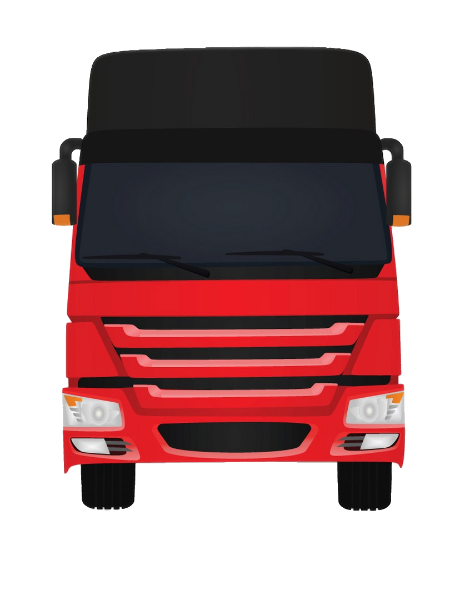
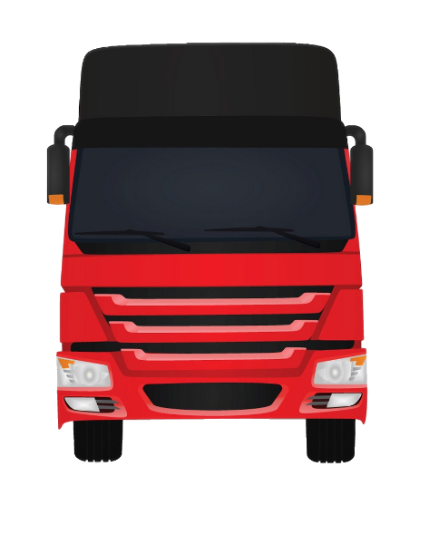

Skills
Drive
As a young boy, I often envy those kids at my age who can ride bicycle that time, but today I don't care anymore simply because I can drive more than just a bicycle. Now, I can drive a bicycle, motorcycle, tricycle, cars either manual or automatic, and as well as trucks. As a matter of fact, I have got my non-professional driver's license when I was 17 with a restriction of 1 and 2. I am planning to upgrade it to a professional one someday and if possible I want to add another code restriction to my license.
 

Edit
As I've mention in the about section I'm a BSIT student so having the knowledge to do minor or major editing is a plus in this kind of course. I am not proficient enough when it comes to editing especially photos and videos but I always find myself finished something that looks good to me. Some of the softwares that I use or have used are the following; Photoshop for photo manipulation, Microsoft Word for word editing, Microsoft Powerpoint for presentation and lastly Power Director for video editing.
Code
Being a BSIT student opens up a different world for me, now that I have the knowledge on how things work in the fields of information and technology I want to be part of it. I want to build something that might be useful not just for me but for the community as well. Currently, the technology that I can use or have basic understanding are HTML 5, CSS 3, Javascript and PHP for front and back web development. Then there is C# for desktop applications and game development. Then when it comes to database I often used MySql database for data manipulation.